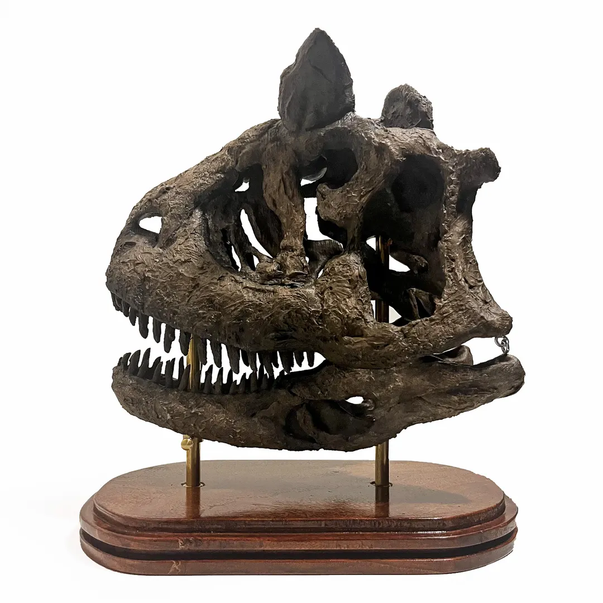
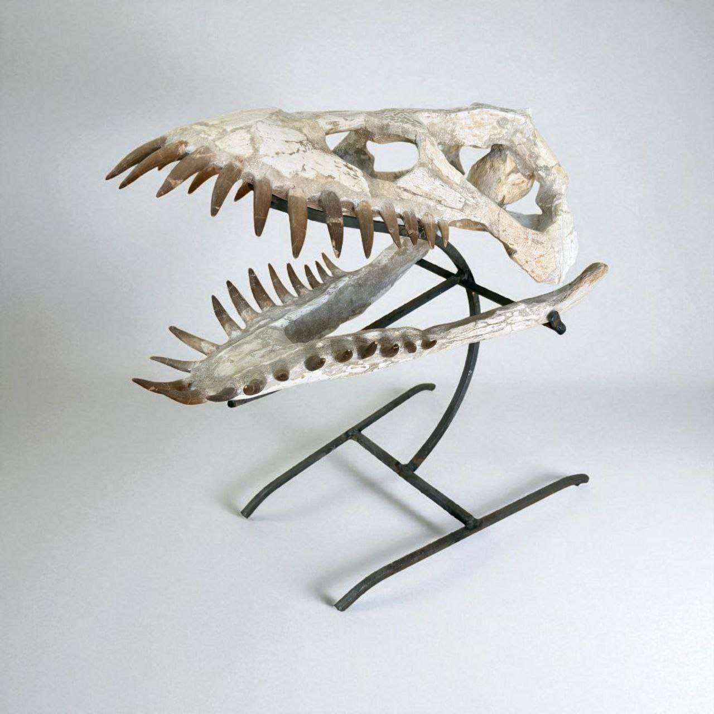
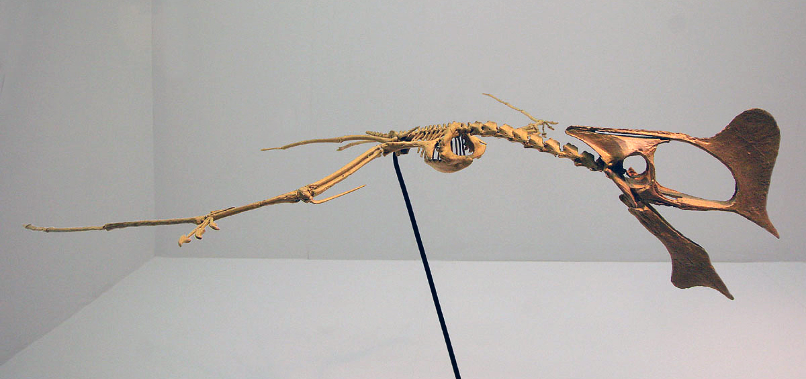
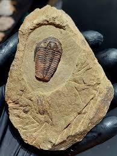
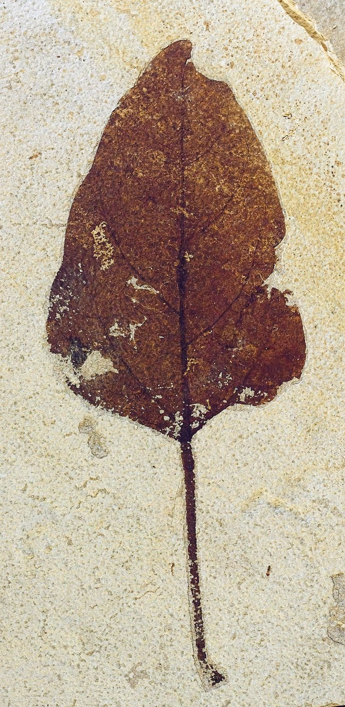
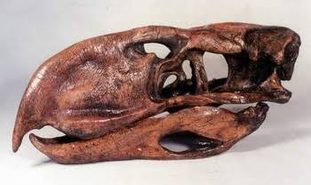
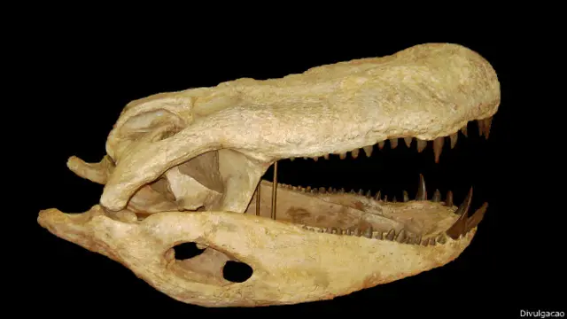

Animais Terrestres
Aqui você encontrará uma ampla seleção de animais terrestres pré-históricos. Como por exeplo esse exemplar de um crânio de um Carnotauro

animais Marinhos
Aqui você encontrará uma ampla seleção de animais marinhos pré-históricos. Como por exemplo esse exemplar de um crânio de um Plesiosaurio

Répteis Voadores
Aqui você encontrará uma ampla seleção de répteis voadores pré-históricos. Como por exemplo essa replica de uma Tapejara

Invertebrados
Aqui você encontrará uma ampla seleção de invertebrados pré-históricos. Como por exemplo esse exemplar de um trilobita

Plantas
Aqui você encontrará uma ampla seleção de plantas pré-históricas. Como por exemplo esse exemplar de uma folha de um Gyrocarpus

Aves
Aqui você encontrará uma ampla seleção de aves pré-históricas. Como por exemplo essa replica de um crânio de Phororhacos

Semi Aguáticos
Aqui você encontrará uma ampla seleção de animais semi-aquáticos pré-históricos. Como por exemplo essa replica de um crânio de um Purussauros brasiliensis
